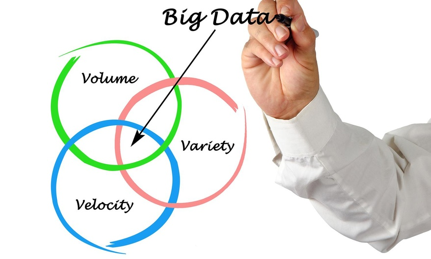

< 기본적인 빅데이터의 특성 3V >

대규모의 데이터를 의미한다.
정형데이터(이름, ID, 주소 등)의 한정된 데이터 종류에서, 비정형 데이터(사진, 동영상 등)의 영역까지 다루게 되었다.
데이터의 양이 커지고 다양화됨에 따라 수집되는 속도 또한 빨라져야 한다.
- Value (가치)
- Veracity(신뢰성)
< 3V에서 추가된 2가지 특성, 5V 가 되다. >
데이터의 영역이 더욱 커지고, 다양한 기술이 빅데이터와 결합되면서 추가적인 특성이 필요해졌다.
많은 데이터를 수집하다보면 원치 않는 데이터를 함께 수집할 수 도 있다. 이러한 데이터들을 확인하고, 삭제하는 작업을 통해 빅데이터를 구성하는 데이터들의 신뢰성을 확보해야만이 빅데이터가 의미를 가진다.
데이터는 가치있는 정보가 되어야 그 의미가 있는 것이다. 빅데이터를 수집하기 전에 수집한 데이터로 어떤 가치있는 정보를 만들 것인지 설계하는 것이 가장 먼저라는 의견이 있다.
- Validity(정확성)
- Volatility(휘발성)
< 5V를 넘어서 7V 까지 >
빅데이터의 활용범위가 넓어지면서 5V를 넘어 7V로 빅데이터의 특성을 정의하게 되었다.

다양하고 큰 데이터를 빠른 속도로 수집하더라고 그 데이터가 정확하고 타당한지 검증해야 한다.
데이터가 얼마나 오래 저장될 수 있고 타당한지, 오랜시간 활용할 수 있는지에 대한 특성이다. 다양한 양질의 데이터를 많이 수집했다 하더라도, 그 데이터를 오래 보관할 수 없어 삭제된다면 의미가 없다.